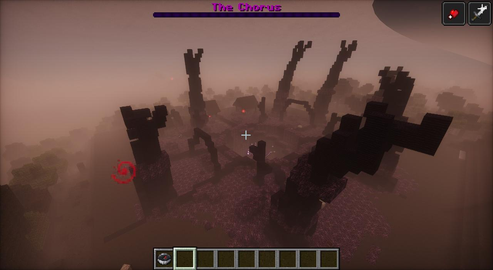

- Wakes
- Once the Carrier is dead and the static has signed off, 300 to 1000 blocks out
- Find it
- The Watcher's Needle (The Hive), handed out after It Speaks, or
/statichollow locate hive - Size
- About seventy blocks across; the pit in the middle is twelve deep
- In the pit
- The Chorus
- Arriving
- "The ground here is warm, and soft, and it gives under you. Something under it is breathing."
What it is
With the Carrier dead, the parasite can't hear itself in the static any more. So it grows itself a mind instead, out in the world, in a hamlet it took whole. For about thirty blocks round, everything has gone under its creep: violet Hive Flesh, roots of black Hive Chitin running out over the ground from the middle, and ribs of chitin arched over the ground on the east, south and west. The way in is from the north, through the hamlet's gate.
The first time someone comes near, the Watcher says:
it took them whole. the people, the houses. everything they knew is in that pit now.
it thinks with those, on the stalks round the pit. cut them and it can't think straight. there was a priest here. read him.

The hamlet it took
Three cottages and a bell tower, half swallowed by the creep. The lane runs in past them from the gate, between fence posts that have mostly fallen. The roofs have fallen in at one end and the creep grows up the walls and in through the doors. The bell tower has a ladder up inside it.
In the first cottage is a lectern with the priest's journal, The Book of the Hollow Lane by Fr. Aldous Mercer, and his chest beside it with what he brought for the fire:
- a Surgical Kit
- flint and steel, and six fire charges
- a lantern, four bread, two golden apples and five iron ingots
His last page says what to do: "It thinks with the four bulbs on the black stalks. Burn what you can. Cut what you can't."
The Hive Hands
The black spires round the pit are alive (since 1.53.0): seven Hive Hands, each an arm as tall as a tree coming up out of a mound of hive flesh, braided chitin round a core of flesh, a palm with eyes and a mouth at the top and three long hooked fingers. They never stop moving, and they turn to follow you. Come within reach and they slam down on you (the ground lights up violet where it's going to land), sweep low across their own foot, or grab you, lift you high over the hive, squeeze, and throw you.
They can be killed; fire hurts them more. A dead one withers and goes down into its mound, and drops hive chitin and flesh. While the Chorus is still in its pit, the hive grows a dead hand back after five minutes. In a hive grown before 1.53.0, the old spires come down and the hands come up the first time you're there. More on the Chorus's page.
The nerve nodes
Round the pit stand four stalks of chitin, nine blocks high, with steps of chitin wound round each one. On top of each is a Nerve Node, glowing and pulsing, joined to the Chorus by a cord with its light running along it. This is what it thinks with. Climb the steps and tear the nodes open: each one you break makes it scream and makes it easier to hurt. Break all four and everything gets through (advancement Senseless).
The pit
In the middle, the pit: about twenty-two blocks across at the rim, twelve deep, a ridge of flesh round its lip and black ribs of chitin up its walls. A ledge winds down its wall from the rim on the north side to the floor. The floor is heaped and wet, and in its middle is the socket where the Chorus is rooted.
The first time anyone comes to the edge of the pit, the Chorus comes up out of it (the cutscene The Mind) and the fight starts. It never leaves its pit. See the Chorus for the fight. When it's brought down to a quarter it tears itself down into the ground and runs, leaving a Chorus Fragment behind on the floor of the pit. That fragment leads you to the Sinkhole and the Deep.
Biomass, pods and bones
Heaps of biomass lie about the place, violet flesh with chitin forced out through it. They aren't dead: with anyone about, they heave themselves up into the parasite's pure forms (see the turned). Torn husks show where some already got up. Its pods sit in the creep, and the bones of what it took lie here and there.
Advancements here
- The Hive: Come to where the parasite is growing itself a mind
- Senseless: Tear open all four of the Chorus's nerve nodes
- It Ran: Drive the Chorus down out of its pit
The rest of Chapter Five's are on the advancements page.